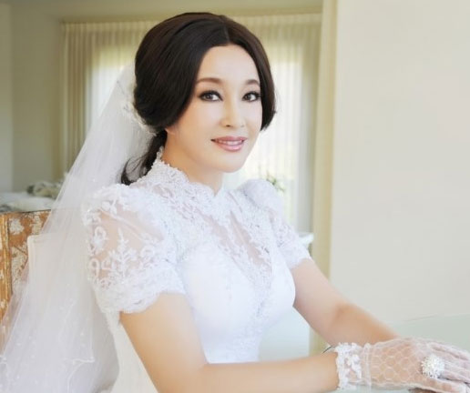
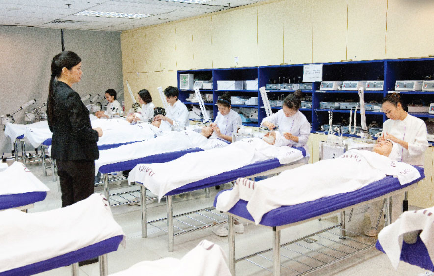
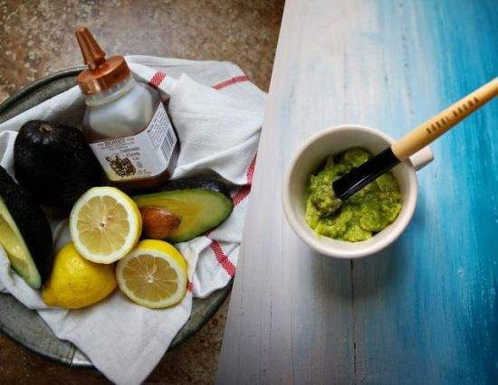
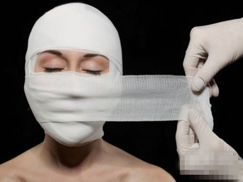
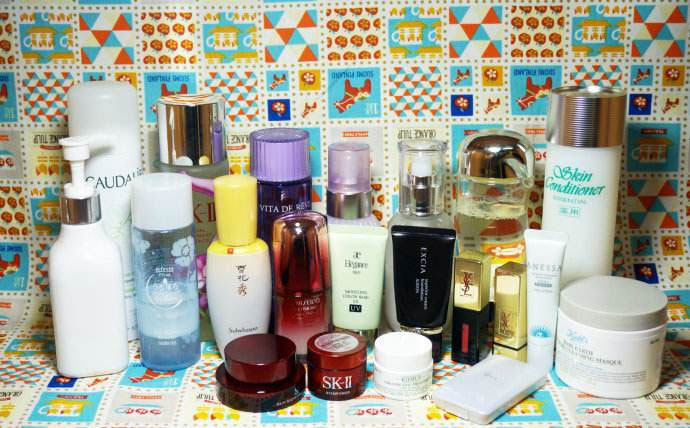
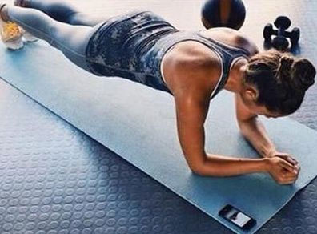
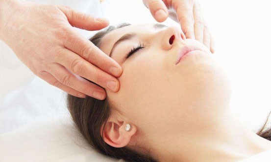
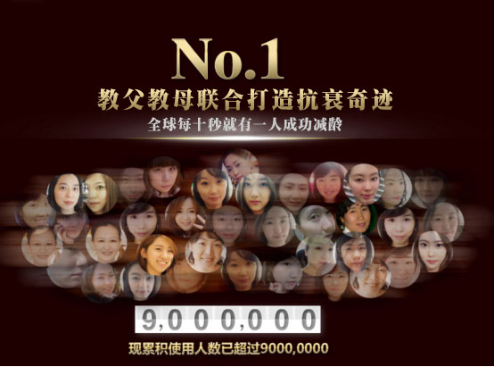

想像刘晓庆那样被称为“不老妖精”吗
长按识别下方二维码
添加微信
前100名免费可以跟郑明明真人线上互动咨询
您的美丽之路就此开启！
60岁女星四婚 做了一辈子保养的她震惊所有人
看出来刘晓庆已62岁了吗！？目前她的外貌和状态却让大家惊讶。保养的跟20几岁的小姑娘一样，在她将近60岁开始了她第四段婚姻！第四任丈夫说花了30年才把她追到手的！大家在大骂她 “老妖精”、“老狐狸精”的同时，却不得不嫉妒这个站在风口浪尖上的美丽女人的传奇一生和保养功底。
看不出来几十年的风风雨雨再她的脸上留下多少。她依然追求时尚， 依然和年轻人一样疯狂的享受生活，大家都想知道她是怎么保养的，她自己是从来不在公众面前说的，只是说自己心态好，喜欢运动啦。呵呵， 作为明星要是没有好的保养品支撑着说不定老成什么什么样呢。她背后就是国际美容教母郑明明！当年郑明明在香港创办了自己的美容院，甚至开到了美国的洛杉矶，唯独中国大陆没有，她看到当时大陆的美容行业一片荒芜，郑明明非常想回馈祖国，把美丽也传播给到大陆女性！就在这时，作为郑明明的熟客，刘晓庆利用自己的资源帮助了她，最后终于将自己的美容院带到了大陆发展！这样一来，刘晓庆能一直享受到美容教母的保养护理，她们也从此成为了好友，到现在她们已经是30多年的真金姐妹花了！
在教母护理下，刘晓庆毫无皱纹仿佛20岁少女
想像刘晓庆那样被称为“不老妖精”吗
长按识别下方二维码
添加微信
前100名免费可以跟郑明明真人线上互动咨询
您的美丽之路就此开启！
郑明明——国际美容教母，作为“20世纪末影响中国美容美发首位人物”，她一生致力于追求女性之美。众多明星都是她的座上客，从香港红到全国，成名后的她创办了属于自己的学院，更多的女性能够享受到美容带来的自信，甚至改变人生！ 如今70高龄的她，仍在潜心研究祛皱方法，到底是什么让她如此有执念呢？
她说：
相遇是一件美妙的事，因为“美丽”这一件事，我和许多明星相遇，而我的美容技术让广大女性遇见了美丽。有一天，我看到了蔡光欣博士离开了他服务了40年的资生堂公司，转回国内做研发，当时他说了一番话令我很触动—— “我希望有一天，中国也能有自己的资生堂，中国的品牌也能和世界级品牌们一起共享全球市场”。我觉得他的这个梦想，不是一个人的，也不是一个企业的，是整个中国美容业的梦想。既然我也是追求美的，那为什么不跟他一齐来实现这个梦想呢？于是我马上联络他。
我们可谓相见如故，慢慢地就成为了好朋友。直到现在我们交好很久了，他跟我说他在研发一款祛皱的产品，就很有兴趣，我相信从资生堂走出来的产品研发肯定是顶级的，所以我当机就决定要选拔蒙妮坦学院的一批优秀学院来跟着蔡博士来研发学习，一方面是为了让我们的技术更专业，另一方面是为了我们当初要共同实现的梦想！
化妆品教父爱国情深,携手美容教母强强联合
蔡光欣：在台湾资生堂总公司任职长达40年
历任总工程师、厂长、总经理，现任广东创美抗衰研老究院名誉院长；被誉为“中国化妆品制造之父”
蔡博士每月有二十天在潜心研发这款祛皱产品，如此年纪的人从未觉得苦，反而觉得是一件幸福的事，为的就是 打造“made in China（中国制造）”的世界级护肤品牌。于是，美容教母郑明明将她的学生带到蔡博士的研发中心，助力老朋友蔡博士，历时一年，他们要带着这款祛皱产品面世了！
全球第一款同时补充胶原蛋白和玻尿酸的专属产品
皱纹出现的主要原因是因为皮肤随着年龄增大等因素造成了皮肤细胞原有的胶原蛋白和玻尿酸的大量流失而产生皱纹。教母教父联合出品，仅仅通过明星和实验人群使用，还未正式上市就已经引来媒体的轰动式报道！
▲权威媒体报道
专业、效果好 私人定制调理后能够同时补充胶原蛋白和玻尿酸，根据皮肤细胞生理周期，28天皮肤生理期，3个月为皮肤更新周期，完全让皮肤吸收。
通过人体吸收转化为皮肤本身的天然胶原蛋白和玻尿酸，达到安全有效的祛除各种皱纹， 安全、无副作用。
现在，郑明明和蔡博士每天都有一个专门咨询时段，添加微信 前100名免费可以跟郑明明 或者蔡博士真人线上互动咨询，由他们出手可以事半功倍！
长按识别下方二维码
先来测试一下您的肌肤状况
时刻做好抗皱的准备，女人20岁开始就要抗击皱纹？
经研究发现，女人的皱纹，21至25岁出现在眼周，26至30眉间，5年后在嘴的四周。防止皱纹从来没有太早的， 要知道产生皱纹的因素，24小时一直潜伏在你的四周。
年轻的肌肤，采用专业的产品，稍加保养，细纹就会很快恢复；如果不及时护理，细纹慢慢就会变成皱纹，这时候更要采用有效的措施，抚平岁月的痕迹。但很多女性的日常保养往往踩雷！
日常保养这样行不行？
黄瓜片、西瓜皮、蛋清蜂蜜，就算坚持十年， 能看到效果吗？
手术整形、打美容针，花费相当不菲，即便你有钱，你不担心不可预料的 副作用吗？
高档化妆品：比不用化妆品的效果是好一点，但原有的 皱纹会消失吗？
锻炼：锻炼可以增加脸部血液循环，能抵抗皱纹的进一步加深。但是对于有皱纹的皮肤，并不能起到祛皱的效果。
按摩：按摩对皱纹的作用是舒缓皱纹周围的压力。但按摩的力量是不可能非常均衡，有相当一部分是朝着增加皱纹的方向使用力量。所以很多人按摩后感觉皱纹增多。
饮食：目前没有任何科学根据和例证，饮食能去皱。皮肤皱纹，更多的是需要针对性补充皮肤营养，将皮肤细胞 “饱满圆润”起来。
不用动刀的"拉皮手术",让你看上去更年轻
多年来，人们对祛皱的效果失望，是因为那些化妆品仅仅作用于表皮层，就像修路，只是让路平整，但路基没有加固，因此效果只是暂时的。郑明明和蔡博士能够做到一对一私人定制方案， 针对不同肤质不同年龄来生成祛皱方案，再配合产品，达到跟手术、拉皮一样的效果，并且能长久保持。

祛皱前肌肤松弛，缺乏弹力，肌肤表面皱纹曲线明显
祛皱前肌肤松弛，缺乏弹力，肌肤表面皱纹曲线明显
这就是郑明明的三大技术特点
对皮肤做更深层的软组织层次做处理，可将下垂的肌肉复位。由于所有的松垂组织都得到了提紧复位，能够最大程度上保护使用者的面神经。所以解决了单纯拉皮术造成的皮肤紧绷的"面具脸"。
实现除皱并防止新松垂的产生，同步解决"皱纹、肌肤松垂、面廓凹陷"三大老化问题，可谓一举三得。
解决了传统拉皮、打针注射除皱手术导致的皮肤变薄、切口痕痒、头皮脱发、效果维持短等缺点。所以，使用之后，不仅不用动刀子，还能持续使用保持效果，获得年轻化和美丽脸型的双重效果。
解决了传统拉皮、打针注射除皱手术导致的皮肤变薄、切口痕痒、头皮脱发、效果维持短等缺点。所以，使用之后，不仅不用动刀子，还能持续使用保持效果，获得年轻化和美丽脸型的双重效果。
教父教母团队研究发现:肌底皱纹从20岁开始生长
20岁
肌底皱纹开始生长
25-30岁
第一道皱纹显露在面部·······加速衰老分界
30-40岁
动力性皱纹
40岁以上
重力性皱纹
私人定制护肤 四大奇迹功效
无论是眼角、颈脖处细纹，还是身体其他部位的皱纹，使用后都会再明显变淡直至消失，消除岁月在脸上留下的痕迹。
修复面部肌肤粗糙问题，改善松弛的眼睑，拉平眼袋，眼睑肌肤重新变得水润。
分解肌肤暗黄、粗糙，淡化面部色斑，实现肌肤深层锁水，在肌肤细腻嫩白，就像新生儿一样娇嫩。
收紧脸部松弛、下坠肌肤，脸颊紧致，除掉双下巴，俏脸变得精致小巧，30天成为一张人见人爱的"美人脸"。
为什么她们能做到,比同龄人年轻10岁？
我是一个特别爱笑的人，年轻时候朋友就经常说，这么爱笑，小心以后长鱼尾纹！可年轻人谁在意这个，平时护肤也顶多是考虑美白。从没想到，今年34岁的我，竟然长了那么多皱纹！当我从镜子里看到自己眼角的细纹和法令纹时，我真的特别崩溃！走了不知道多少弯路，花了不少冤枉钱，最终在朋友介绍下我知道了教父教母竟然强强联合了，知道了他们这款新研发产品，想着冤枉钱都花了不少了也不差这一次，没想到这一次花的不是冤枉钱！现在整个人都年轻了五岁，能一直笑着活下去啦。
祛皱效果： ★★★★★ 肌肤状况： ★★★★★
复发指数：0 副作用： 0
像大多数人一样，我虽然才27岁，但是生完小孩以后，脸上慢慢爬满了皱纹，简直是黄脸婆一个。 虽然也在用几千元的高级化妆品，但是都没有什么明显的效果。后来在网上看到郑明明和资生堂那个研发博士出了祛皱抗衰产品，感觉效果不错，就使用了一个月，没想到细纹、干纹都消失了， 不仅我的皮肤变得紧致弹滑，就连产后的妊娠纹也都一并祛除了，已经33岁的我，别人都说我看起来只有20岁！
祛皱效果： ★★★★★ 肌肤状况： ★★★★★
复发指数：0 副作用： 0
我的工作由于老板每天早上都要问很多运营方面的问题，我为了准备这些问题，每天学习加工作，基本都是十一点后回家。不久后我身体和精神都受不了了，疲倦皱纹都悄悄的爬上来了，要很厚的妆才能掩盖上我的皱纹。但每天都这么用化妆品遮盖自己的皱纹还真不是解决的办法。我从百度了解郑明明在祛皱这一块挺好的，添加了她团队的微信，然后尝试了这个产品，她说像我这样的不是很深的皱纹，1个月左右就能看到效果。我每天都坚持搽， 还不到一个月，我就发现我的稍淡的皱纹都看不见了，稍深点的，也都淡了很多。现在都不用浓妆，有种很清爽的感觉，连人也变得神精气爽。由于我的认真和努力，老板没多久就给我升职加薪，目是6500税前，功夫不负有心人！
祛皱效果： ★★★★★ 肌肤状况： ★★★★★
复发指数：0 副作用： 0
我已经48岁了，在家里打理家务，给已经工作了的儿子女儿做饭洗衣服，所以没有怎么保养。女儿出来工作了两年，发现我好像皱纹越来越多还更深刻了，可谓“岁月不饶人”啊，她有孝心，特意查找了很多信息，最后看中了教父教母可以私人定制祛皱方案的团队，添加了他们的微信号，拍下了我的脸部情况的照片，详细地咨询一番，但我的年龄比较大，修复时间可能稍微长一点。 但在使用一个多月后，我的皱纹已经平滑了很多，连出去买菜的时候，店主都说我皮肤看起来紧致了好多。到第五十天左右，我的脸已经是上图那样，女儿和儿子都说：“妈妈看上去年轻了好多”，真是太感谢老师了。
祛皱效果： ★★★★★ 肌肤状况： ★★★★
复发指数：0 副作用： 0
想要像她们一样让肌肤逆龄？
现在征集100名女性的皱纹图片，写上你的美丽烦恼，我们就有专人给你免费提供方案！
长按识别下方二维码
马上添加护肤团队微信：
30天年轻10岁，青春不是神话
看看郑明明就知道，72多岁的高龄，依然保持着美丽，仍在跟皱纹抗争，经她手美容的明星多不胜数，无论是她自身还是众多女明星，祛皱效果都摆在她们脸上！而现在，她联合蔡博士组建团队，为的就是她传播美丽的事业，造福广大女性！
教父教母联合反映热烈
全球每10秒就有1名女性获得一对一定制方案
郑明明和蔡博士为您护航，您也能成为一个美丽的故事！一对一尊享私人定制祛皱方案，先定方案再实行，不乱来！免费咨询各种皮肤问题，获得方案请添加： ，要上传图片，说明自己肤质等等状况哦！

|
点击加微信教你祛皱秘籍 |
今年四十岁了，眼角特别多鱼尾纹。看到郑明明出山了就马上咨询了，方案是先根据我自身来定制好的，然后才能有用相应产品，用了一周效果真的很明显，鱼尾纹明显淡了许多，皮肤也滋润了些。会继续使用的。
原本方案我是很满意的，但去到用产品方面的时候我很担心过敏，这个关注很久了还是决定用下。用了一个月了效果不仅很好而且没有过敏，很温和。
买给妈妈使用的，看评价不错就马上咨询了，没想到是郑明明真人在线上给我妈定制方案的！太激动了！现在妈妈的皮肤滋润多了，不再那么多皱纹了，整个人都年轻了10岁一样。
我52岁，定制了私人方案之后我原本不是很相信后续要用的产品品，之前我的眼角细纹和法令纹很多，所以只能赶紧试一试了免得又加重了，跟团队配合好之后，皮肤变得很紧致了，皱纹也没有那么深了，人也显得年轻了，效果真的很好。推荐了朋友~
抬头纹比较严重，有眼袋，现在一个月了，感觉产品使用起来很快就被吸收了，眼周的细纹淡了，眼袋也消了一些哦，不再那么干燥了，效果还不错。
也有一把岁数了，皱纹也不少，没事逛上网看了评论还挺好的，就买一套试试，没想到还真的管用，虽然皱纹还是有的，但是比我原来少了很多也浅了很多，皮肤也紧张了很多呢
无意间在网页上浏览到了郑明明和蔡博士要合作了，本来打算直接就买一套试试，但他们这个团队太实诚了，都先不让买产品的，都是定制了方案才能用的，没想到效果还真的不错，在用产品之前，脸上比较干燥的，细纹也是很多，我才29岁呢，后来每天坚持用，皮肤润了很多细纹也消失了不少。
眼角细纹好多，同事推荐我去加郑明明和蔡博士的团队，现在用了3个多星期了，眼角的小细纹感觉淡化了很多，肌肤也变得有弹性了，我会坚持使用，也会推荐朋友来的呢
看到网友的评价还不错，我直接都不咨询了，就买了一套回来，坚持用了20多天，肌肤变得更加有弹性了，我会跟什么的朋友好好分享。